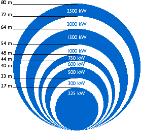

Size
of Wind Turbines

 Service
crew working on a 32 m rotor blade on a 1.5 MW wind
turbine
Service
crew working on a 32 m rotor blade on a 1.5 MW wind
turbine
Photograph
© 2000 Christian Kjaer
Power Output
Increases with the Swept Rotor Area
 When
a farmer tells you how much land he is farming, he will usually
state an area in terms of hectares or acres. With a wind turbine
it is much the same story, though doing wind farming we farm
a vertical area instead of a horizontal one.
When
a farmer tells you how much land he is farming, he will usually
state an area in terms of hectares or acres. With a wind turbine
it is much the same story, though doing wind farming we farm
a vertical area instead of a horizontal one.
 The area of the disc covered by the rotor,
(and wind speeds, of course), determines how much energy we can
harvest in a year.
The area of the disc covered by the rotor,
(and wind speeds, of course), determines how much energy we can
harvest in a year.
 The picture gives you an idea of the normal
rotor sizes of wind turbines: A typical turbine with a 600 kW
electrical generator will typically have a rotor diameter of
some 44 metres (144 ft.). If you double the rotor diameter, you
get an area which is four times larger (two squared).
This means that you also get four times as much power
output from the rotor.
The picture gives you an idea of the normal
rotor sizes of wind turbines: A typical turbine with a 600 kW
electrical generator will typically have a rotor diameter of
some 44 metres (144 ft.). If you double the rotor diameter, you
get an area which is four times larger (two squared).
This means that you also get four times as much power
output from the rotor.
 Rotor diameters may vary somewhat from the
figures given above, because many manufacturers
optimise their machines to local wind conditions: A larger
generator, of course, requires more power (i.e. strong winds)
to turn at all. So if you install a wind turbine in a low wind
area you will actually maximise annual output by using a fairly
small generator for a given rotor size (or a larger
rotor size for a given generator) For a 600 kW machine rotor
diameters may vary from 39 to 48 m (128 to 157 ft.) The reason
why you may get more output from a relatively smaller generator
in a low wind area is that the turbine will be running more hours
during the year.
Rotor diameters may vary somewhat from the
figures given above, because many manufacturers
optimise their machines to local wind conditions: A larger
generator, of course, requires more power (i.e. strong winds)
to turn at all. So if you install a wind turbine in a low wind
area you will actually maximise annual output by using a fairly
small generator for a given rotor size (or a larger
rotor size for a given generator) For a 600 kW machine rotor
diameters may vary from 39 to 48 m (128 to 157 ft.) The reason
why you may get more output from a relatively smaller generator
in a low wind area is that the turbine will be running more hours
during the year.
Reasons for Choosing Large Turbines
- There are economies of scale in wind turbines, i.e. larger machines are usually able to deliver electricity at a lower cost than smaller machines. The reason is that the cost of foundations, road building, electrical grid connection, plus a number of components in the turbine (the electronic control system etc.), are somewhat independent of the size of the machine.
- Larger machines are particularly well suited for offshore wind power. The cost of foundations does not rise in proportion to the size of the machine, and maintenance costs are largely independent of the size of the machine.
- In areas where it is difficult to find sites for more than a single turbine, a large turbine with a tall tower uses the existing wind resource more efficiently.
You may take a look at some megawatt-sized wind turbines in the picture gallery.
Reasons for Choosing Smaller Turbines
- The local electrical grid may be too weak to handle the electricity output from a large machine. This may be the case in remote parts of the electrical grid with low population density and little electricity consumption in the area.
- There is less fluctuation in the electricity output from a wind park consisting of a number of smaller machines, since wind fluctuations occur randomly, and therefore tend to cancel out. Again, smaller machines may be an advantage in a weak electrical grid.
- The cost of using large cranes, and building a road strong enough to carry the turbine components may make smaller machines more economic in some areas.
- Several smaller machines spread the risk in case of temporary machine failure, e.g. due to lightning strikes.
- aesthetical landscape considerations may sometimes dictate the use of smaller machines. Large machines, however, will usually have a much lower rotational speed, which means that one large machine really does not attract as much attention as many small, fast moving rotors. (See the section on wind turbines in the landscape).
© Copyright 2000 Soren Krohn. All rights reserved.
Updated 6 August 2000
http://www.windpower.org/tour/wtrb/size.htm